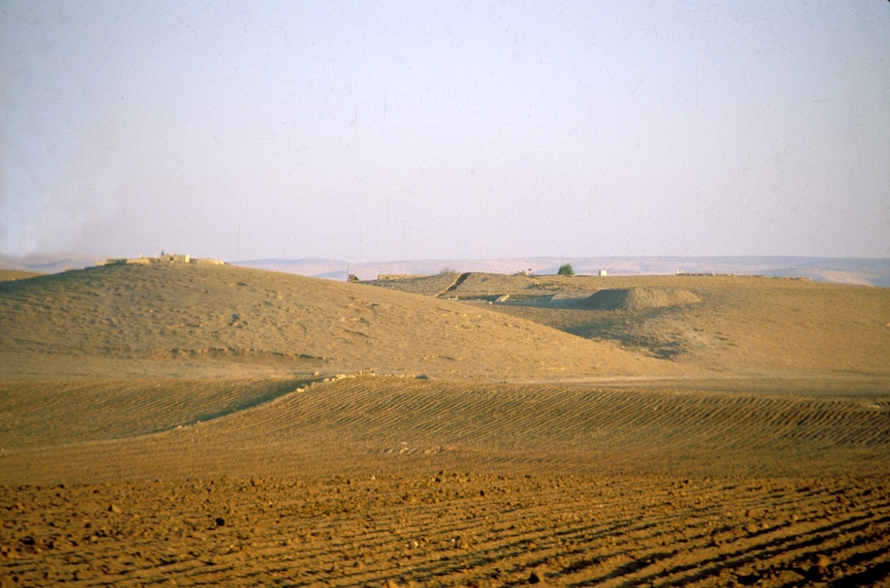

|
The Tell Mozan / Urkesh Archaeological Project began in 1984, and continues to be an active project today. Tell Mozan is located in northeast Syria in the Khabur river basin; the Tell is the site of ancient Urkesh, a city associated with the Hurrians. Its origins are lost in time, but the earliest remains found at the site extend to the early fourth millennium B.C. The city's prosperity was due in part to its position between the copper-rich highlands to the north and the cities of the Mesopotamian heartland to the south. It took almost a decade of work before the archaeologists were able to determine that Tell Mozan was the ancient city of Urkesh. Clay seal impressions depicted the royal family and members of the royal court, and yielded precious information about the city’s history. The uncovered remains of this ancient city include a palace, a temple, an open plaza, and an abi, a large underground structure tied to necromantic rituals. |
 |
As Field Director for the Tell Mozan / Urkesh Archaeological Project, I was directly responsible for reaching the scientific goals set out in the beginning of the season; this entailed two to three month yearly seasons in the field, with a staff of thirty and a workforce of between 100 and 150. This was a major responsibility, as I had to do justice to the most minute nuances of a complex urban stratigraphy, as well as deal with the organizational, practical and personnel aspects of any field project. My strong concern for a broader fruition of the results also lead me to wider efforts at communicating them to local stakeholders, as, working for so many years at the site together, we were all conscious of the significance of recovering a new chapter in the history of ancient Syria, that of the Hurrians.
Despite the present difficulties in Syria, the project and my involvement in it remain active, following local staff who document conditions, maintain conserved architecture and guide the few local visitors who come to the site. My involvement also includes my own research as well as following a team of collaborators who are laying the groundwork for an eco-archaeological park centered around Tell Mozan.